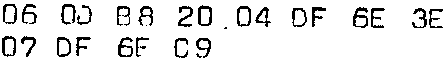
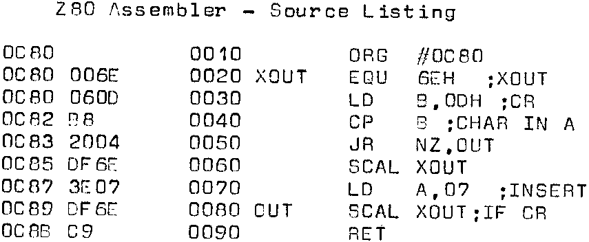
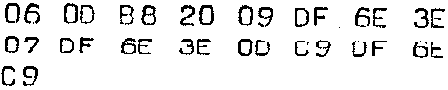

INMC 80 News |
October–December 1981 · Issue 5 |
| Page 55 of 71 |
|---|
|
|
By P. Forrester |
Someone out there may be interested in the solution to a little problem which perplexed me for a while. My Olivetti TE300 teleprinter seems to be a bit slow on the carriage return, and, when using the excellent Naspen, tended to produce a ragged left hand edge, which was a little distressing. The solution would be to make the Printer wait at the start of the line by outputting a non printing character, but the problem was – just how do you do that? The Naspen manual states that the printer routine is reflected through address 101DH to 101FH, and if you look there you find that it contains DF 6E C9, which is a call to, and return from, the serial output routine XOUT. So the first thing to do is to replace these bytes, using the M command, by a jump to somewhere else, say to 0C80, Then at 0C80 you put in a routine which checks each character passing through the A register to see whether it is a CR (0DH in ASCI). The character is first printed, then if it is not a CR, control is returned and the next character is checked, but if it is, a non-printing character is inserted. The following code, derived with the help of the equally splendid Zeap, did just that and cleaned up the left hand edge beautifully. So all you have to do is modify 101D to C3 80 0C. and 0C80 to
The assembler program which produced this is as follows:

So now the Naspen output is cleaned up, and Zeap also produces clean printing because it has its own built-in line delay using the K command, but it would be nice to be able to LIST BASIC programs as well using the delay routine. NASSYS 1 provides the U command for user-defined print routines, which are pointed to by an address stored at 0C78; so the first thing to do is to M 0C78 80 0C. But as it stands the routine doesn’t work. Eventually it dawned that the routine never returns with a CR in A since it was sent to the printer and then changed to a non-printing character; thus the VDU display routine never gets CRs and you can’t enter any commands! The solution is to put CR back in A just before returning, so at 0C89 we insert SCAL XOUT, LO A 0DH, RET (thereby creating two exits from the routine, which is said to be bad practise, but who cares?) and the code insert starting at 0C80 becomes:
| Page 55 of 71 |
|---|